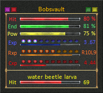
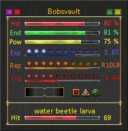

Summary - Style - Derida
These are the Derida style Summary windows.
Style 1
This style shows the player health, endurance, and power status using colored bars inside the window. In addition the target name and health status are shown at the bottom of the window.

Style 2
This style shows the player health, endurance, and power status using colored bars inside the window. The player's Exp, Rxp, and Cxp levels are also shown in the window. In addition the target name and health status are shown at the bottom of the window.

Style 3
This style shows the player health, endurance, and power status using colored bars inside the window. The player's Exp, Rxp, and Cxp levels are also shown in the window. In addition the target name and health status are shown at the bottom of the window. The Compass and Performance Meter are also displayed in this window.

Notes: The status bar skins cannot be changed using the choices in the Status Bar Skins option. There are some invisible buttons in the Summary windows. Click on the various status bars to activate them. Click on the images to either side of the player name to toggle the floating play health, endurance, power, and target health windows on/off.